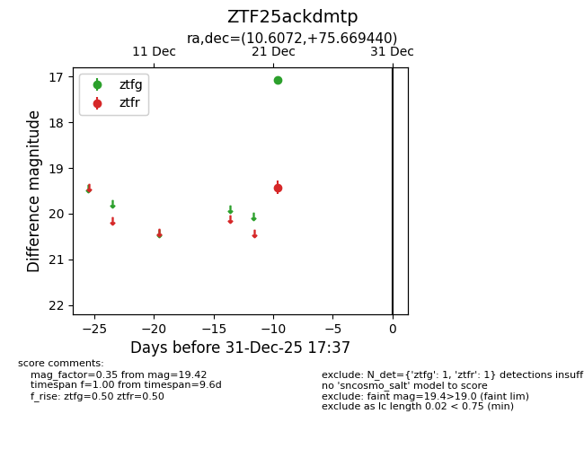
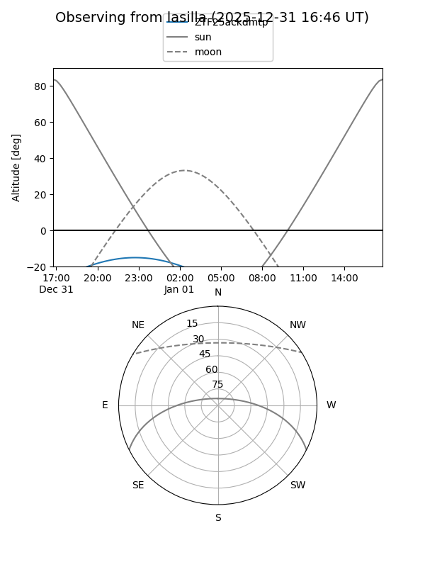
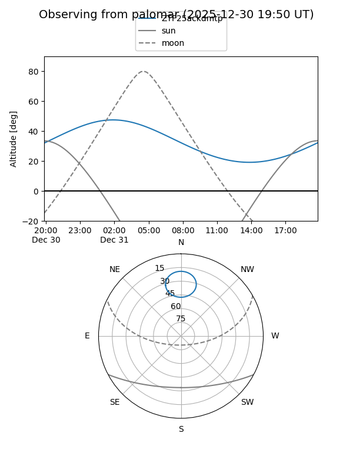

ZTF25ackdmtp
Target ZTF25ackdmtp at 2025-12-24 16:17
Aliases and brokers:
FINK: fink-portal.org/ZTF25ackdmtp
Lasair: lasair-ztf.lsst.ac.uk/objects/ZTF25ackdmtp
ALeRCE: alerce.online/object/ZTF25ackdmtp
alt names
ZTF25ackdmtp (ztf,fink_ztf)
Coordinates:
equatorial (ra, dec) = 10.6072,+75.66944
equatorial (HMS+DMS) = 00:42:25.73,+75:40:09.99
galactic (l, b) = (122.3604,+12.80769)
Flags:
Photometry:
last ztfg=17.08, ztfr=19.42
1 ztfg, 1 ztfr detections
Lightcurve

Visibility


Additional plots